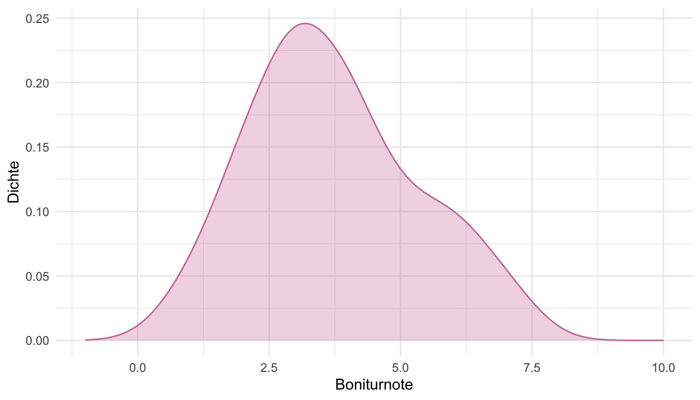
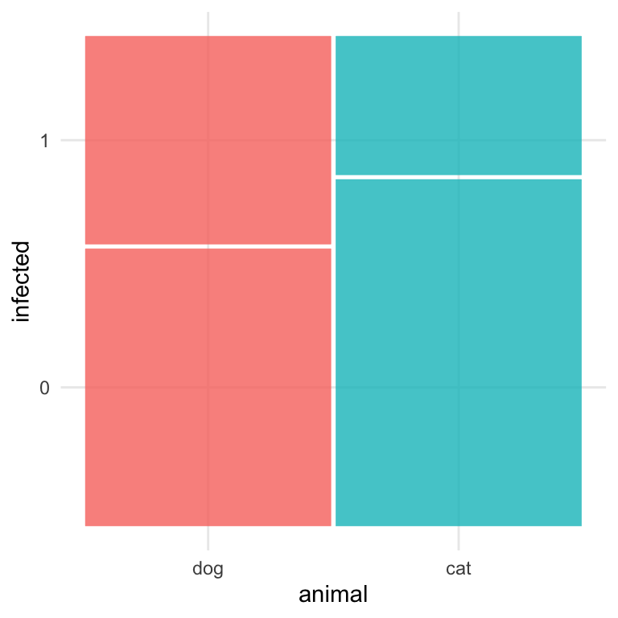

pacman::p_load(tidyverse, magrittr, readxl, ggmosaic,
janitor, see, patchwork, latex2exp)17 Visualisierung von Daten
Version vom July 20, 2023 um 15:51:04
“Numerical quantities focus on expected values, graphical summaries on unexpected values.” — John Tukey
Ein wichtiger Teil in der Analyse von Daten ist die Visualisierung. Wir glauben keine Auswertung eines mathematischen Algorithmus, wenn wir nicht die Bestätigung in einer Abbildung sehen. Daher ist die Visualisierung die Grundlage für ein fundiertes, wissenschaftliches Arbeiten. In diesem Kapitel stelle ich dir verschiedene Abbildungen vor, die uns helfen werden zu Verstehen ob es einen Zusammenhang zwischen Y und X gibt. Wir haben ein \(y\) vorliegen, was wir auf die y-Achse eines Graphen legen und daneben dann mehrere Variablen bzw. Spalten die wir \(x\) nennen. Eine der Variablen legen wir auf die x-Achse des Graphen. Nach den anderen \(x\) färben wir die Abbildung ein.
Wir nennen eine Abbildung auch häufig Plot. Das ist der englische Begriff und hat nichts in unserem Kontext mit einer Fläche zu tun.
In diesem Kapitel wollen wir durch die häufigsten und wichtigsten Abbildungen in der explorativen Datenanalyse durchghen. Das wären im folgenden diese Abbildungen:
- Histogramm in Kapitel 17.2.3 für mehr als 20 Beobachtungen (pro Gruppe). Wir nutzen ein Histogramm um die Verteilung einer Variable zu visualisieren.
- Boxplot in Kapitel 17.2.5 für 5 bis 20 Beobachtungen (pro Gruppe). Ebenso wie bei einem Histogramm, geht es bei einem Boxplot auch um die Verteilung der einer Variable.
- Barplot in Kapitel 17.2.6 für 5 und mehr Beobachtungen (pro Gruppe). Der Barplot oder das Balkendiagramm bzw. Säulendiagramm stellt den Mittelwert und die Standardabweichung da.
- Dotplot in Kapitel 17.2.7 für 3 bis 5 Beobachtungen (pro Gruppe). Hier geht es weniger um die Verteilung der Variable, sondern darum die wenigen Beobachtungen zu visualisieren.
- Scatterplot in Kapitel 17.2.8 für zwei kontinuierliche Variablen. Auch xy-Plot genannt. Die Abbildung, die dir bekannt sein müsste. Wir zeichnen hier eine Grade durch eine Punktewolke.
- Mosaicplot in Kapitel 17.2.9 für zwei diskrete Variablen. Eine etwas seltene Abbildung, wenn wir Variablen abbilden wollen, die diskret sind bzw. aus Kategorien bestehen.
Konkret ist eine Variable gleich einer Spalte in einem Datensatz.
17.1 Genutzte R Pakete
Wir wollen folgende R Pakete in diesem Kapitel nutzen.
Am Ende des Kapitels findest du nochmal den gesamten R Code in einem Rutsch zum selber durchführen oder aber kopieren.
17.2 Grundlagen in ggplot()
Im Gegensatz zu dem Pipe-Operator
%>% nutzt ggplot den Operator + um die verschiedenen ggplot Funktionen (geom_) miteinander zu verbinden.Wir nutzen in R das R Paket ggplot2 um unsere Daten zu visualisieren. Die zentrale Idee von ggplot2 ist, dass wir uns eine Abbildung wie ein Sandwich bauen. Zuerst legen wir eine Scheibe Brot hin und legen uns dann Scheibe für Scheibe weitere Schichten übereinander. Oder die Idee eines Bildes, wo wir erst die Leinwand definieren und dann Farbschicht über Farbschicht auftragen. Das Konzept von ggplot2ist schlecht zu beschreiben deshalb habe ich auch noch zwei Videos hierfür gemacht. Um den Prozess von ggplot2 zu visualisieren…
Grundlagen von ggplot() im Video
Du findest auf YouTube Einführung in R - Teil 16.0 - Trockenübung ggplot2 simpel und einfach erklärt als Video.
Sowie auch auf YouTube Einführung in R - Teil 16.1 - Abbildungen mit ggplot in R erstellen. Idee und Konzept von ggplot als Video. Also alles nochmal als Video - vielleicht einfacher nachzuvollziehen als in einem Fließtext.
Die Funktion ggplot() ist die zentrale Funktion, die die Leinwand erschafft auf der wir dann verschiedene Schichten aufbringen werden. Diese Schichten heißen geom. Es gibt nicht nur ein geom sondern mehrere. Zum Beispiel das geom_boxplot für die Erstellung von Boxplots, das geom_histogram für die Erstellung von Histogrammen. Die Auswahl ist riesig. Die einzelnen Schichten werden dann über den Operator + miteinander verbunden. Soviel erstmal zur Trockenübung. Schauen wir uns das ganze einmal an einem Beispiel an.
17.2.1 Datenbeispiel
Wir importieren den Datensatz flea_cat_dog.xlsx und wollen einzelne Variablen visualisieren. Wir kennen den Datensatz schon aus den vorherigen Beispielen. Dennoch nochmal hier der Datensatz in Tabelle 17.1 einmal dargestellt.
flea_dog_cat_tbl <- read_excel("data/flea_dog_cat.xlsx") %>%
mutate(animal = as_factor(animal))Spaltennamen sind in Englisch und haben keine Leerzeichen. Die Funktion
clean_names() aus dem R Paket janitor ist hier eine Hilfe.Im Folgenden ist es wichtig, dass du dir die Spaltennamen merkst. Wir können nur die exakten, wortwörtlichen Spaltennamen verwenden. Sonst erhalten wir einen Fehler. Deshalb haben wir auch keine Leerzeichen in den Spaltennamen.
| animal | jump_length | flea_count | grade | infected |
|---|---|---|---|---|
| dog | 5.7 | 18 | 8 | 0 |
| dog | 8.9 | 22 | 8 | 1 |
| dog | 11.8 | 17 | 6 | 1 |
| dog | 8.2 | 12 | 8 | 0 |
| dog | 5.6 | 23 | 7 | 1 |
| dog | 9.1 | 18 | 7 | 0 |
| dog | 7.6 | 21 | 9 | 0 |
| cat | 3.2 | 12 | 7 | 1 |
| cat | 2.2 | 13 | 5 | 0 |
| cat | 5.4 | 11 | 7 | 0 |
| cat | 4.1 | 12 | 6 | 0 |
| cat | 4.3 | 16 | 6 | 1 |
| cat | 7.9 | 9 | 6 | 0 |
| cat | 6.1 | 7 | 5 | 0 |
17.2.2 Erste Abbildung in ggplot()
Der folgende R Code erstellt die Leinwand in der Abbildung 17.1 für die folgende, zusätzliches Schichten (geom).
ggplot(data = flea_dog_cat_tbl,
aes(x = animal , y = jump_length))Wir schauen uns einmal den Code im Detail an.
-
ggplotruft die Funktion auf. Die Funktion ist dafür da den Plot zu zeichnen. -
data = flea_dog_cat_tblbennent den Datensatz aus dem der Plot gebaut werden soll. -
aes()ist die Abkürzung für aesthetics und beschreibt, was auf die x-Achse soll, was auf die y-Achse soll sowie ob es noch andere Faktoren in den Daten gibt.-
xbraucht den Spaltennamen für die Variable auf der x-Achse. -
ybraucht den Spaltennamen für die Variable auf der y-Achse.
-
Faktoren meint hier andere Gruppenvariablen. Variablen sind ein anderes Wort für Spalten. Also Variablen die wir mit
as_factorerschaffen haben.
animal und jump_length aus dem Datensatz flea_dog_cat_tbl.Wir sehen, dass wir nichts sehen in Abbildung 17.1. Der Grund ist, dass wir noch kein geom hinzugefügt haben. Das geom beschreibt nun wie die Zahlen in der Datentabelle flea_dog_cat_tbl visualisiert werden sollen.
Histogramm, Boxplot, Scatterplot und Mosaicplot im Video
Du findest auf YouTube Einführung in R - Teil 16.2 - Histogramm, Boxplot, Scatterplot und Mosaicplot mit ggplot in R als Video. Weitere Videos werden dann noch folgen und ergänzt.
17.2.3 Histogramm
Wir nutzen für die Erstellung eines Histogramms den Datensatz dog_fleas_hist.csv. Wir brauchen für ein anständiges Histogramm, wo du auch was erkennen kannst, mindestens 20 Beobachtung. Am besten mehr noch mhr Beobachtungen. Deshalb schauen wir uns jetzt einmal 39 Hunde an und zählen wieviele Flöhe die Hunde jeweils haben, dargestellt in der Spalteflea_count. Darüber hinaus bestimmen wir auch noch das mittlere Gewicht der Flöhe auf dem jeweiligen Hund, dargestellt in der Spalte flea_weight.
dog_fleas_hist_tbl <- read_csv("data/dog_fleas_hist.csv")| flea_count | flea_weight |
|---|---|
| 0 | 0.00 |
| 1 | 7.43 |
| 4 | 21.04 |
| 2 | 20.07 |
| 1 | 21.90 |
| 0 | 0.00 |
| 2 | 24.96 |
| 1 | 27.08 |
| 5 | 16.58 |
| 1 | 19.92 |
| 0 | 0.00 |
| 0 | 0.00 |
| 2 | 24.63 |
| 4 | 21.64 |
| 3 | 20.97 |
| 1 | 23.15 |
| 0 | 0.00 |
| 3 | 14.91 |
| 1 | 19.39 |
| 2 | 17.66 |
| 1 | 19.15 |
| 1 | 25.10 |
| 2 | 26.38 |
| 2 | 19.33 |
| 2 | 13.29 |
| 1 | 17.81 |
| 0 | 0.00 |
| 2 | 23.56 |
| 1 | 18.64 |
| 1 | 15.64 |
| 3 | 19.88 |
| 1 | 18.40 |
| 1 | 25.17 |
| 0 | 0.00 |
| 0 | 0.00 |
Tabelle 17.2 zeigt den Datensatz dog_fleas_hist.csv. Wir wollen jetzt die Variable flea_count und flea_weight jeweils abbilden. Wir beginnen mit der diskreten Variable flea_count. Im Gegensatz zu der Variable flea_weight haben wir bei der Anzahl gleiche Zahlen vorliegen, die wir dann zusammen darstellen können. Abbildung 17.2 zeigt die Darstellung der Tabelle. Auf der x-Achse ist die Anzahl an Flöhen dargestellt. Auf der y-Achse die Anzahl der jeweiligen Anzahl an Flöhen. Das klingt jetzt etwas schief, aber schauen wir uns die Abbilung näher an.

Wir sehen in Abbildung 17.2 das acht Hunde keine Flöhe hatten - also eine Anzahl an Flöhen von 0. Auf der anderen Seite hatten zwei Hunde vier Flöhe und ein Hund hatte sogar fünf Flöhe. Wir sehen also die Verteilung der Anzahl an Flöhen über alle unsere 39 Hundebeobachtungen.
Wir schauen uns aber die Verteilung der Anzahl an Flöhen meist nicht in der Form von gestapelten Punkten an, sondern in der Form eines Histogramms also einem Balkendiagramm. Abbildung 17.3 zeigt das Histogramm für die Anzahl der Flöhe.
ggplot(data = dog_fleas_hist_tbl, aes(x = flea_count)) +
geom_histogram(binwidth = 1, fill = "gray", color = "black") +
theme_bw() +
labs(x = "Anzahl Flöhe", y = "Anzahl") 
Was sehen wir in der Abbildung 17.3? Anstatt von gestapelten Punkten sehen wir jetzt Balken, die die jeweilige Anzahl an Flöhen zusammenfassen. Der Unterschied ist bei einer diskreten Variable wie der Anzahl (eng. count) relativ gering.
Anders sieht es für kontenuierliche Variablen mit Kommazahlen aus. Schauen wir uns das Gewicht der Flöhe an, so sehen wir, dass es sehr viele Zahlen gibt, die nur einmal vorkomen. Abbildung 17.4 zeigt das Histogramm für das Geicht der Flöhe.
ggplot(data = dog_fleas_hist_tbl, aes(x = flea_weight)) +
geom_histogram(binwidth = 1, fill = "gray", color = "black") +
theme_bw() +
labs(x = "Gewicht [mg]", y = "Anzahl") 
Wie entsteht nun ein Hisotgramm für konetnierliche Zahlen? Schauen wir uns dafür einmal ein kleineres Datenbeispiel an, in dem wir nur Flöhe mit einem Gewicht größer als 11 und kleiner als 19 wäheln. Wir nutzen dazu die Funktion filter(flea_weight > 11 & flea_weight < 19). Wir erhalten folgende Zahlen und das entsprechende Histogramm.
[1] 13.29 14.91 15.64 16.58 17.66 17.81 18.40 18.64
Abbildung 17.5 zeigt das Histogramm der reduzierten Daten. Die roten vertikalen Linien zeigen die Position der einzelnen Flohgewichte auf der x-Achse. Die blauen Hilfslinien machen nochmal klarer, wie hoch die einzelnen Balken sind sowie welche Beobachtungen auf der x-Achse in den jeweiligen Balken mit eingehen. Wir sehen, dass wir einen Hund mit Flöhen haben, die zwischen 12.5 und 13.5 wiegen - der entsprechende Balken erhält die Anzahl von eins. Auf der anderen Seite sehen wir, dass es drei Hunde mit Flöhen, die zwischen 17.5 und 18.5 wiegen. Daher wächst der Balken auf eine Anzahl von drei.
Wir können mit der Option binwidth in dem geom_histogram() einstellen, wie breit auf der x-Achse die jeweiligen Balken sein sollen. Hier empfiehlt es sich verschiedene Zahlen für binwidthauszuprobieren.
17.2.4 Density Plot
Eine weitere Möglichkeit sich eine Verteilung anzuschauen, ist die Daten nicht als Balkendiagramm sondern als Densityplot - also Dichteverteilung - anzusehen. Im Prinzip verwandeln wir die Balken in eine Kurve. Damit würden wir im Prinzip unterschiedliche Balkenhöhen ausgleichen udn eine “glattere” Darstellung erreichen. Wir wir aber gleich sehen werden, benötigen wir dazu eine Menge an Beoabchtungen und auch dann ist das Ergebnis eventuell nicht gut zu interpretieren.
ggplot(data = dog_fleas_hist_tbl, aes(x = flea_count)) +
geom_histogram(binwidth = 1, fill = "gray", color = "black") +
theme_bw() +
labs(x = "Anzahl Flöhe", y = "Anzahl")
ggplot(data = dog_fleas_hist_tbl, aes(x = flea_count)) +
geom_density(fill = "gray", color = "black") +
theme_bw() +
labs(x = "Anzahl Flöhe", y = "Häufigkeit") 

Abbildung 17.6 zeigt auf der linken Seite erneut die Abbildung des Histogramms als Balkendiagramm für die Anzahl der Flöhe auf den 39 Hunden. Auf der rechten Seite die entsprechenden gleichen Daten als Denistyplot. Klar ist die Wellenbewegung des Densityplots zu erkennen. Hier leigen zu wenige Beobachtungen und Kategorien auf der x-Achse vor, so dass der Densityplot nicht zu empfehlen ist.
ggplot(data = dog_fleas_hist_tbl, aes(x = flea_weight)) +
geom_histogram(binwidth = 1, fill = "gray", color = "black") +
theme_bw() +
labs(x = "Gewicht [mg]", y = "Anzahl")
ggplot(data = dog_fleas_hist_tbl, aes(x = flea_weight)) +
geom_density(fill = "gray", color = "black") +
theme_bw() +
labs(x = "Gewicht [mg]", y = "Häufigkeit") 

Abbildung 17.7 zeigt auf der linken Seite erneut die Abbildung des Histogramms als Balkendiagramm für das Gewicht der Flöhe auf den 39 Hunden. Insbesondere bei dieser Abbildung erkennst du die Nachteile des Densityplot. Dadurch das es einen Peak von acht Hunden mit einem Flohgewicht von 0 gibt, zeigt der Densityplot eine seltsame Wellenform. Es emppfielt sich daher die Daten zuerst als Histogramm zu betrachten.
17.2.5 Boxplot
Mit dem Boxplot können wir den Median und die Quartile visualisieren. In Abbildung 17.8 sehen wir einen Boxplot, der den Median und die Quartile visualisiert. Die Box wird aus dem IQR gebildet. Der Median wird als Strich in der Box gezeigt. Die Schnurrhaare (eng. Whiskers) sind das 1.5 fache des IQR. Punkte die außerhalb der Schnurrhaare liegen werden als einzelne Punkte dargestellt. Diese einzelnen Punkte werden auch als Ausreißer (eng. Outlier) bezeichnet.

In Abbildung 17.9 sehen wir den Zusammenhang zwischen einem Histogramm, Densityplot und dem Boxplot. Der Median \(\tilde{y}\) im Boxplot zeigt die höchste Stelle des Densityplots an. Durch einen Boxplot kann die Verteilung der entsprechenden Zahlen abgeschätzt werden.

Die “liegende” Darstellung des Boxplots dient nur der Veranschaulichung und dem Verständnis des Zusammenhangs von Histogramm und Boxplot. In der Abbildung 17.10 sehen wir drei Boxplots für einen Faktor mit drei Leveln. Jedes Level wird duch einen Boxplot dargestellt. Zum Beispiel eine Düngerbehandlung mit drei Konzentrationen. Auf der x-Achse würden wir die Behandelung finden und auf der y-Achse das Trockengewicht in [kg/ha].

Wie erstellen wir nun einen Boxplot in R? Zuerst laden wir die Daten mit der Funktion read_excel() in R, wenn du die Daten als .xlsx Datei vorliegen hast. Im XX kannst du nochmal das Importieren von Daten wiederholen.
flea_dog_cat_tbl <- read_excel("data/flea_dog_cat.xlsx")
In Abbildung 17.11 ist der Boxplot für die Daten aus der Datei flea_dog_cat.xlsx dargestellt. Auf der x-Achse finden wir die Tierart als cat und dog. Auf der y-Achse ist die Sprungweite in [cm] dargestellt.
Wir erkennen auf einen Blick, dass die Sprungweite von den Hundeflöhen weiter ist als die Sprungweite der Katzenflöhe. Im Weiteren können wir abschätzen, dass die Streuung etwa gleich groß ist. Die Boxen sind in etwa gleich groß und die Whiskers in etwa gleich lang.
ggplot(data = flea_dog_cat_tbl, aes(x = animal, y = jump_length,
fill = animal)) +
geom_boxplot() +
geom_jitter(width = 0.25, shape = 1) +
theme_bw() +
labs(x = "Tierart", y = "Sprungweite [cm]") 
Wir neigen dazu die Boxplots über zu interpretieren, wenn die Anzahl der Beobachtungen klein ist. Deshalb können wir mit dem geom_jitter() noch die Beobachtungen zu den Boxplot ergänzen, dargestellt in Abbildung 17.12. Die Funktion geom_jitter() streut die Punkte zufällig, so dass keine Punkte übereinander liegen. Wir haben hier die Streuweite durch die Option width = 0.25 etwas eingeschränkt. Darüber hinaus habe wir das Aussehen der Punkte mit shape = 1 geändert, so dass wir die Jitter-Punkte von den potenziellen Ausreißer-Punkten unterscheiden können. Du kannst auch andere Zahlen hinter shape eintragen um verschiedene Punktesymbole durch zuprobieren. Eine Übersicht an shapes findest du auch hier unter Cookbook for R > Graphs > Shapes and line types.
17.2.6 Barplot oder Balkendiagramm
Der Barplot oder das Balkendiagramm auch Säulendiagramm ist eigentlich veraltet. Wir haben mit dem Boxplot eine viel bessere Methode um eine Verteilung und gleichzeitig auch die Gruppenunterschiede zu visualisieren. Warum nutzen wir jetzt so viel den Barplot? Das hat damit zu tun, dass früher - oder besser bis vor kurzem - in Excel kein Boxplot möglich war. Daher nutzte jeder der mit Excel seine Daten auswertet den Barplot. Und was der Bauer nicht kennt… deshalb ist hier auch der Barplot dargestellt. Ich persönlich mag den Barplot eher weniger. Der Barplot ist einfach schlechter als der Boxplot. Wir haben nur die Standardabweichung als Maßzahl für die Streuung. Beim Boxplot haben wir das IQR, was uns mehr über die Streuung aussagt. Aber gut, häufig musst du den Barplot in deiner Abschlussarbeit machen. Also dann hier der Barplot. Wie erstellen wir nun einen Barplot in R? Zuerst laden wir die Daten mit der Funktion read_excel() in R, wenn du die Daten als .xlsx Datei vorliegen hast.
flea_dog_cat_tbl <- read_excel("data/flea_dog_cat.xlsx")Wir müssen jetzt für ggplot() noch den Mittelwert und die Streuung für die Gruppen berechnen. Du kannst als Streuung die Standardabweichung oder den Standardfehler nehmen. Ich würde die Standardabweichung bei kleinen Fallzahlen kleiner als 20 Beobachtungen nehmen.
Wir nutzen nun das Objekt stat_tbl um den Barplot mit der Funktion ggplot() zu erstellen. Dabei müssen wir zum einen schauen, dass die Balken nicht übereinander angeordnet sind. Nebeneinander angeordnete Balken kriegen wir mit der Option stat = "identity" in dem geom_bar(). Dann müssen wir noch die Fehlerbalken ergänzen mit dem geom_errorbar. Hier kann nochmal mit der Option width = an der Länge der Fehlerenden gedreht werden.
ggplot(stat_tbl, aes(x = animal, y = mean, fill = animal)) +
geom_bar(stat = "identity") +
geom_errorbar(aes(ymin = mean-sd, ymax = mean+sd),
width = 0.2)
Im Zweifel muss du nochmal googlen und schauen welche Form dir am besten zusagt. Es gibt sehr viele Möglichkeiten einen Barplot zu erstellen.
17.2.7 Dotplot
Wenn wir weniger als fünf Beobachtungen haben, dann ist meist ein Boxplot verzerrend. Wir sehen eine Box und glauben, dass wir viele Datenpunkte vorliegen haben. Bei 3 bis 7 Beobachtungen je Gruppe bietet sich der Dotplot als eine Lösung an. Wir stellen hier alle Beobachtungen als einzelne Punkte dar. Wie erstellen wir nun einen Dotplot in R? Zuerst laden wir die Daten mit der Funktion read_excel() in R, wenn du die Daten als .xlsx Datei vorliegen hast.
flea_dog_cat_tbl <- read_excel("data/flea_dog_cat.xlsx")ggplot(data = flea_dog_cat_tbl, aes(x = animal, y = grade,
fill = animal)) +
geom_dotplot(binaxis = "y", stackdir = "center") +
theme_bw() +
labs(x = "Tierart", y = "Boniturnote [1-9]") 
In Abbildung 17.13 sehen wir den Dotplot aus der Datei flea_dog_cat.xlsx. Auf der x-Achse sind die Level des Faktors animal dargestellt und auf der y-Achse die Notenbewertung grade der einzelnen Hunde und Katzen. Die Funktion geom_dotplot() erschafft das Layer für die Dots bzw. Punkte. Wir müssen in der Funktion noch zwei Dinge angeben, damit der Plot so aussieht, dass wir den Dotplot gut interpretieren können. Zum einen müssen wir die Option binaxis = y wählen, damit die Punkte horizontal geordnet werden. Zum anderen wollen wir auch, dass die Punkte zentriert sind und nutzen dafür die Option stackdir = center.
ggplot(data = flea_dog_cat_tbl, aes(x = animal, y = grade,
fill = animal)) +
geom_dotplot(binaxis = "y", stackdir = "center") +
stat_summary(fun = median, fun.min = median, fun.max = median,
geom = "crossbar", width = 0.5) +
theme_bw() +
labs(x = "Tierart", y = "Boniturnote [1-9]") 
Nun macht es wenig Sinn bei sehr wenigen Beobachtungen noch statistische Maßzahlen mit in den Plot zu zeichnen. Sonst hätten wir auch gleich einen Boxplot als Visualisierung der Daten wählen können. In Abbildung 17.14 sehen wir die Ergänzung des Medians. Hier müssen wir etwas mehr angeben, aber immerhin haben wir so eine Idee, wo die “meisten” Beobachtungen wären. Aber auch hier ist Vorsicht geboten. Wir haben sehr wenige Beobachtungen, so dass eine Beobachtung mehr oder weniger große Auswirkungen auf den Median und die Interpretation hat.
17.2.8 Scatterplot
Der Scatterplot wird auch xy-Plot genannt. Wir stellen in einem Scatterplot zwei kontenuierliche Variablen dar. Dann wollen wir eine Linie durch die Punkte legen. Im Prinzip fragen wir uns, wie hänge die Werte auf der y-Achse von den Werten auf der x-Achse ab? Wenn sich also die Werte auf der x-Achse erhöhen, wie verhalten sich dann die Werte auf der y-Achse?
ggplot(data = flea_dog_cat_tbl, aes(x = flea_count, y = jump_length)) +
geom_point() +
stat_smooth(method = "lm", se = FALSE) +
theme_bw() +
labs(x = "Anzahl der Flöhe", y = "Sprungweite in [cm]") 
Abbildung 17.15 zeigt den Scatterplot für die Spalte flea_count auf der x-Achse und jump_length auf der y-Achse. Mit der Funktion geom_point() können wir die Punktepaare für jede Beobachtung zeichnen. In unserem Fall zeichnen wir mit der Funktion stat_smooth() noch die entsprechende Grade durch die Punkte. Es handelt sich hierbei um eine Regression, da wir eine Gerade durch die Punktewolke zeichnen.
17.2.9 Mosaic Plot
Wenn wir zwei Spalten visualisieren wollen, die aus zwei Faktoren bestehen mit jeweils zwei Leveln, dann nutzen wir den Mosaic Plot. Wir nutzen den Datensatz flea_dog_cat.xlsx mit vierzehn Beobachtungen. Zuerst drehen wir nochmal die Ordnung der Level in dem Faktor animal.
Schauen wir uns jetzt einmal die 2x2 Kreuztabelle der beiden Spalten animal and infected an. Um die 2x2 Tabelle in R in der richtigen Orientierung vorliegen zu haben, müssen wir nochmal einen kleinen Klimmzug über mutate() nehmen. Wir wandeln die Variable infected in einen Faktor um und sortieren die Level entsprechend, so dass wir die richtige Ordnung wie später im Mosaic Plot haben. Dieser Umweg hat nur didaktische Gründe, später plotten wir den Mosaic Plot direkt und schauen uns vorher nicht die 2x2 Tabelle in R an. Hier also die 2x2 Kreuztablle aus R.
flea_dog_cat_mosaic_tbl %>%
mutate(infected = factor(infected, levels = c(1, 0))) %>%
tabyl(infected, animal) infected dog cat
1 3 2
0 4 5Wir sehen in der Tabelle, dass wir mehr nicht infizierte Tiere (n = 9) als infizierte Tiere haben (n = 5). Die Aufteilung zwischen den beiden Tierarten ist nahezu gleich. Im folgenden wollen wir diese Tabelle durch einen Mosaic Plot einmal visualisieren.
Um jetzt einen Mosaic Plot zeichnen zu können müssen wir die relativen Anteile pro Spalte bzw. für jedes Level von \(x\) berechnen. In unserem Fall ist \(x\) die Variable animal und die Level sind dog und cat. In der folgenden 2x2 Kreuztablle werden die relativen Anteile für die Hunde- und Katzenflöhe für den Infektionsstatus berechnet.
| Animal | ||||
| Dog | Cat | |||
| Infected | Yes (1) | \(\cfrac{3}{7} = 0.43\) | \(\cfrac{2}{7} = 0.29\) | \(\mathbf{5}\) |
| No (0) | \(\cfrac{4}{7} = 0.57\) | \(\cfrac{5}{7} = 0.71\) | \(\mathbf{9}\) | |
| \(\mathbf{7}\) | \(\mathbf{7}\) | \(n = 14\) |
Wir können jetzt die relativen Anteile in den Mosaic Plot übertragen und erhalten die Abbildung 17.16. Wir müssen also zuerst die absoluten Anteile bestimmen um dann die relativen Anteile für die Spalten berechnen zu können. Abschließend zeichnen wir dann den Mosaic Plot. Wir nutzen dafür das R Paket ggmosaic mit der Funktion geom_mosaic().
ggplot(data = flea_dog_cat_mosaic_tbl) +
geom_mosaic(aes(x = product(infected, animal), fill = animal)) +
annotate("text", x = c(0.25, 0.25, 0.75, 0.75),
y = c(0.25, 0.75, 0.25, 0.85),
label = c("0.57", "0.43", "0.71", "0.29"), size = 7) +
theme(legend.position = "none")
Abbildung 17.16 zeigt den Mosaic Plot für die Variable animal and infected. Die untrschiedlich großen Flächen bilden die Verhältnisse der 2x2 Tabelle ab. So sehen wir, dass es mehr uninfizierte Tiere als infizierte Tiere gibt. Am meisten gibt es uninfizierte Katzen. Am wenigstens treten infizierte Katzen auf.
17.3 Überschriften, Achsen und Legenden
Wenn du mehr machen willst, also die Überschriften anpassen oder aber die Achsenbeschriftung ändern, dann gibt es hier global Hilfe im ggplot Manual. Die Webseite R Cookbook hat auch spezielle Hilfe für ggplot().
In Abbildung 17.17 siehst du eine Abbildung mit Titel und veränderten Beschriftungen. Die Möglichkeiten sind nahezu unbegrenzt und sprengen auch hier den Rahmen. Im Zweifel im R Tutorium vorbeischauen oder aber in der Vorlesung fragen.
ggplot(data = flea_dog_cat_tbl, aes(x = animal, y = jump_length,
fill = animal)) +
geom_boxplot() +
labs(title = "Frischgewicht in Abhängigkeit von der Behandlung",
x = "Behandlung", y = "Frischgewicht in kg/ha") +
scale_x_discrete(labels = c("Katze", "Hund")) +
scale_fill_discrete(name = "Behandlung", labels = c("Katze", "Hund")) +
theme_bw() 
17.4 Mathematische Ausdrücke in den Achsenbeschriftungen
Häufig wollen wir nicht nur einfache Achsenbeschriftungen haben, sondern auch irgendwie komplexere Einheiten wie Eisendüngergehalt im Boden in \([kg\, ha]^{-1}\) darstellen. Jetzt soll die Einheit auch in dieser Form mit in die Achsenbeschriftung. Wir können dafür zwei Wege wählen. Einmal über das R Paket latex2exp und die Funktion TeX() oder aber die Funktion expression(), wofür wir dann kein eigenes R Paket brauchen. Beide Wege haben Vor- und Nachteile. Wir gehen aber beide mal durch.
Mehr Informationen durch das Tutorium Using latex2exp oder aber eben der Klassiker mit Plot math expression.
Wir können die Funktion expression() nutzen um uns mathematische Formeln zu bauen. Leider ist das Ganze etwas frickelig und auch ich brauche immer drei Anläufe, bis die Formel dann passt. Im Folgenden aber einmal zwei Beispiel für mathematische Formeln und Ausdrücke. Beachte, dass du jedes Leerzeichen durch eine Tilde ~ abbilden musst. Ich nutze die Funktion expression() sehr selten und nur wenn die Formel wirklich sehr einfach ist. Da wir aber schon mit eckigen Klammern Probleme kriegen und diese so nervig mit " einklammern müssen, nutze ich dann das Paket latex2exp was ich im Folgenden vorstellen werde.
Hier aber erstmal zwei Beispiele für eine Formel mit der Funktion expression(). Wenn du mehr über die Möglichkeiten wissen willst, dann schauen auch einmal auf die Hilfeseite von Plot math oder du googelst dir die Lösung wie ich früher zusammen.
plot(expression(Eisendüngeform~und~-höhe~"[kg ha]"^-1), cex = 1.5, main = "")
plot(expression(Fe-Gehalt~"["~mg%.%(kg~TM)^-1~"]"), cex = 1.5, main = "")
Für mich ausdrücklich einfacher geht es mit dem R Paket latex2exp und der Funktion TeX() sowie die Helferfunktion r"()". Ja, hier muss man dann noch eine andere Programmiersprache kennen, aber wie immer, du wirst nur schlauer. Die Informationen zur Matheumgebung in \(\LaTeX\) kommen dann nochmal extra zwischen zwei Dollarzeichen $. Ja, das ist etwas wirr für einen Anfänger, aber wir nutzen hier auch zwei Programmiersprachen zusammen. Zum einen \(\LaTeX\) um die Mathesymbole sauber darzustellen und dann R um die Abbildungen in ggplot() zu bauen. Mehr Informationen zu der Matheumgebung in \(\LaTeX\) findest du einmal in der LaTeX Mathehilfe I sowie der LaTeX Mathehilfe II.
Wie bauen wir uns also unseren mathematischen Ausdruck? Als erstes brauchen wir die Funktion Tex(), die sagt einfach nur aus, dass jetzt \(\LaTeX\)-Code kommt. Dann wollen wir noch einen String brauen in dem der \(\LaTeX\)-Code für unseren mathematischen Ausdruck drin steht. Diesen String bauen wir mit r"()". Achtung, hier ist das Gänsefüßchen oben und unten vor und nach der runden Klammer sehr wichtig. In den Ausdruck können wir dann Text schreiben Eisengehalt oder aber einen mathematischen Ausdruck abgrenzt von zwei Dollarzeichen $ wie $[kg\, ha]^{-1}$. \(\LaTeX\) kann nämlich nicht nur mathematische Ausdrücke sondern ist eigentlich ein Textverarbeitungsprogramm. Deshalb musst du hier nochmal zwischen Text und mathematischen Ausdruck unterscheiden.
Hier nochmal aufgeschlüsselt wie der Code aussieht. Wir schreiben den Code nachher in einer Zeile, aber zum Verständnis ist es besser, wenn wir den Code einmal aufgeklappt sehen.
TeX(
r"(
Eisengehalt $[kg\, ha]^{-1}$
)"
)Wir wollen uns das Ergebnis einmal in einem simplen plot() anschauen. Wir nutzen die Funktionalität natürlich später in ggplot, aber hier ist es so einmal einfacher zu sehen.
plot(cex = 2, main = "",
TeX(r"(
Eisengehalt $[kg\, ha]^{-1}$
)")
)
Auch können wir sehr viel komplexere Formeln erstellen. Beachte auch hier, dass wir zwei Matheumgebungen in \(\LaTeX\) vorliegen haben.
plot(cex = 2, main = "",
TeX(r"(
A $\LaTeX$ formula: $\frac{2hc^2}{\lambda^5}\frac{1}{e^{\frac{hc}{\lambda k_B T}} - 1}$
)")
)
In der Abbildung 17.18 dann nochmal die Anwendung in einem ggplot in dem wir die Achsen entsprechend beschriften und dann auch noch eine ausgedachte Regressionsgeleichung zu der Abbildung ergänzen.
ggplot(data = flea_dog_cat_tbl, aes(x = flea_count, y = jump_length)) +
geom_point() +
stat_smooth(method = "lm", se = FALSE) +
theme_bw() +
labs(x = TeX(r"(Eisengehalt und -höhe $[kg\, ha]^{-1}$)"),
y = TeX(r"(Fe-Gehalt $[mg \cdot (kg TM)^{-1}]$)")) +
annotate("text", x = 10, y = 10,
label = TeX(r"($y = \beta_0 + \beta_1 \cdot x;\; R^2 = 0.24$)"))
Workaround für
Tex() in geom_text()
Wenn du dann mal die Funktion Tex() in geom_text() verwenden willst, dann musst du einmal etwas anpassen. Dann klappt es aber auch hier. Das hat mich mal echt Nerven und Zeit gekostet, deshalb lagere ich die Information mal hier für mich.
ggplot() +
theme_void() +
geom_text(aes(0, 0,
label = TeX(r'($\alpha x^\alpha$, where $\alpha \in 1\ldots 5$)',
output = "character",)), parse = TRUE) 
17.5 Die Okabe-Ito Farbpalette
Mehr zum R Paket see auf der Hilfeseite des Paketes
Neben den klassischen Farben im R Paket ggplotgibt es noch weit, weit mehr Farbpaletten. Wir nutzen in der Folge immer wieder die Okabe-Ito Farbpalette aus dem R Paket see. Die Okabe-Ito Farbpalette ist speziell so gebaut, dass die Farben sich gut für farbenblinde Personen unterscheiden. Der Kontrast zwischen den Farben ist sehr gut. Wenn du eine andere Farbpalette nutzen willst, findest du hier noch andere Color Scales.
ggplot(data = flea_dog_cat_tbl,
aes(x = animal, y = jump_length,
fill = animal)) +
geom_boxplot() +
scale_fill_okabeito() +
theme_bw()
ggplot(data = flea_dog_cat_tbl,
aes(x = animal, y = jump_length,
color = animal)) +
geom_point() +
scale_color_okabeito() +
theme_bw()
17.6 Abbildungen nebeneinander
Das R Paket patchwork erlaubt es mehrere ggplot Abbildungen nebeneinander oder in einem beliebigen Layout miteinander zu verbinden. Das tolle ist, dass die Idee sehr intutiv ist. Wir nutzen wieder das + um verschiedene Plots miteinander zu verbinden.
Im Folgenden erschaffen wir uns zwei ggplots und speichern die Plots in den Objekten p1 und p2. Das ist wie wir es bisher kennen, nur das jetzt keine Abbildung erscheint sondern beide Plots in zwei Objekten gespeichert sind.
p1 <- ggplot(data = flea_dog_cat_tbl,
aes(x = flea_count, y = jump_length,
color = animal)) +
geom_point() +
scale_color_okabeito() +
theme_bw()
p2 <- ggplot(data = flea_dog_cat_tbl,
aes(x = animal, y = jump_length,
color = animal)) +
geom_point() +
scale_color_okabeito() +
theme_bw()Wie können wir nun die beiden Abbildungen nebeneinander zeichnen? Wir nutzen einfach das + Symbol.
p1 + p2
Auf der Seite des R Paket patchwork findest du viel mehr Möglichkeiten das Layout anzupassen und auch die einzelnen Subplots zu beschriften.